The Human Edge
Using and Delivering AI with Judgement
Welcome
The Human Edge: Using and Delivering AI with Judgement
A one-day masterclass · Curtin Executive Education
- Welcome everyone. Today is about doing, not just listening.
- One idea, applied at two scales: at your desk in the morning, across a project in the afternoon.
- The one idea: AI produces a convincing average. Knowing when to trust it, and where you must stay in charge, is the skill that lasts. Tools don’t; judgement does.
- Bring your device. You’ll work on your own tasks and on a real project scenario.
- Ground rule: no stupid questions. The technology is new and everyone is figuring it out.
The provocation we’ll spend the day on
If the AI is genuinely good at running your work, it’s equally good at running everyone else’s. Generic competence, with no variation, is the baseline — not an advantage.
So where does your edge actually live?
- Hold this question. We’ll come back to it at the end of every session.
- The answer the day builds toward: your edge lives in your judgement, your taste, and the variation a rival’s identical model can’t reproduce.
- Everything today — from your first prompt to a project go/no-go — is in service of locating and protecting that edge.
Today’s journey
One idea. Two scales. One day.
| Time | What we do |
|---|---|
| 9:00–10:30 | The average, the tool, the edge — foundations + the trust tool (taught once) |
| 11:00–12:30 | Using AI well, yourself — task scale: prompting, workflow redesign |
| 1:15–2:30 | Why AI delivery is different — project scale: the five differences |
| 3:00–4:00 | Designing the human in, then shipping — checkpoints, roadmap, go/no-go |
| 4:00–4:30 | The edge that’s left to humans + your action plan |
- The trust tool is the connective tissue. We learn it once this morning at the level of a single task (“do I trust this output?”), and we reuse it this afternoon at the level of a whole project (“where does a human stay in the loop?”).
- Same grid, two scales. That’s why this works as one coherent day rather than two crammed together.
- The morning builds the fluency; the afternoon applies it to delivery.
PART I — MORNING
The average, the tool, and your edge
- Part one is personal fluency. By lunch you’ll have directed AI at your own work, judged how far to trust the output, and redesigned one real workflow.
What AI actually is
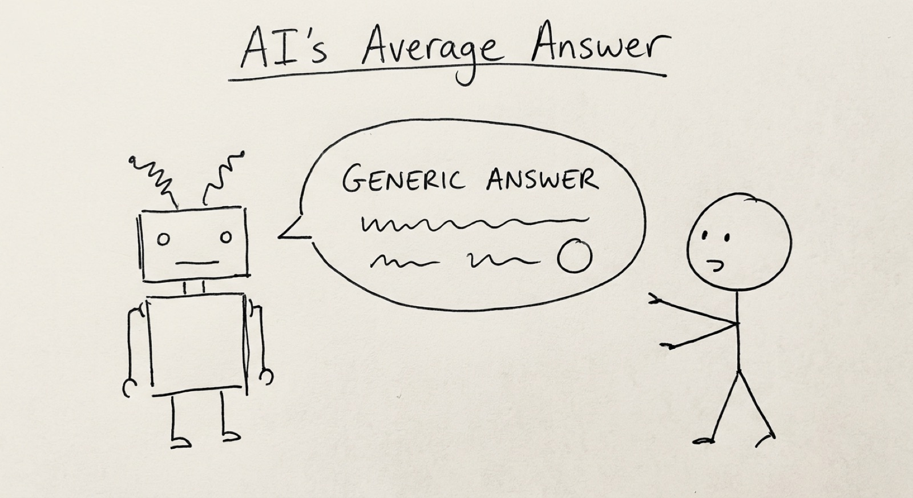
It predicts the next word. Autocomplete, scaled up.
- Trained on billions of pages of text, it learned what tends to follow what. It’s autocomplete on steroids — your phone predicts one word; these predict thousands.
- The result often looks like understanding. It’s pattern-matching, not reasoning.
- You don’t need the maths. You need an honest mental model: what the tool can and can’t do.
- Driving a car well doesn’t require knowing how the engine works — but you do need to know it needs fuel and won’t go underwater.
The one mental model to keep
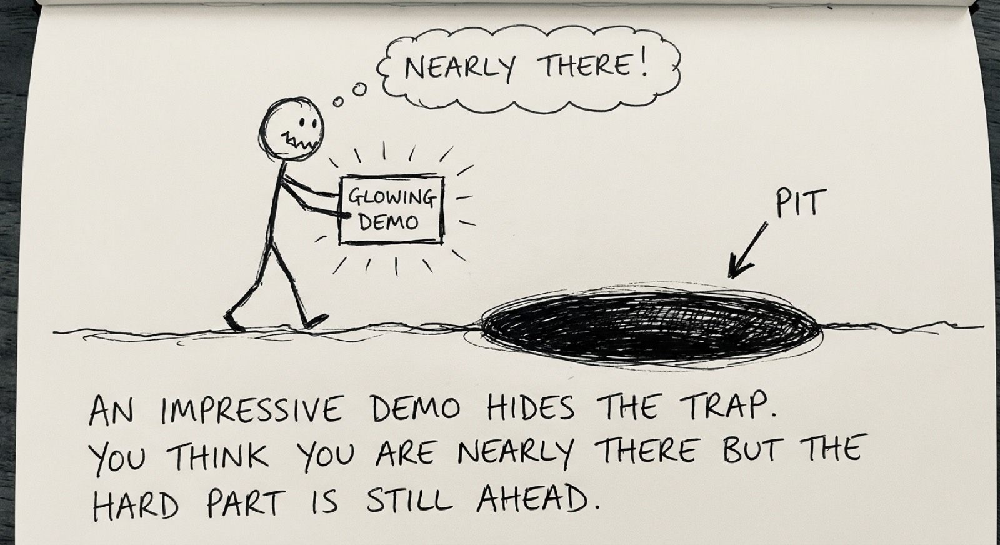
AI produces a convincing average drawn from everything it has seen.
An average, not a truth. It predicts; it does not reason.
- That average is often genuinely excellent — the average of a vast amount of competent writing is itself competent.
- But “about right” and “exactly right” are not the same. It predicts; it does not reason, and it does not “know.”
- This single distinction carries the whole day. If you remember nothing else: it produces a convincing average, and a convincing average is not the same as the truth.
- Everything that follows — the trust tool, prompting, the five differences, the human-in-the-loop design — is an elaboration of this one fact.
Why it’s brilliant at some things
Tasks where “the most plausible version” is exactly what you want:
- ✅ Drafting and writing
- ✅ Summarising documents
- ✅ Formatting and transforming
- ✅ Brainstorming
- ✅ Explaining concepts in simpler terms
- ✅ Finding patterns in data
- If a task has clear patterns, AI can probably help. There are billions of email examples, summaries, and explanations in the training data.
…and quietly unreliable at others
Tasks that need a single correct answer:
- ❌ Factual accuracy (plausible text, not verified truth)
- ❌ Precise figures and calculations
- ❌ Multi-step logical reasoning
- ❌ Your context — it doesn’t know your company, team, or politics
- ❌ Ethical judgement
- The critical point: AI never says “I don’t know.” It gives you a confident, well-structured, completely wrong answer — and it looks identical to a right one.
- Nothing in the tone warns you. That’s the danger: not that it refuses to help, but that it helps convincingly when it shouldn’t.
“Confident nonsense” is not a bug
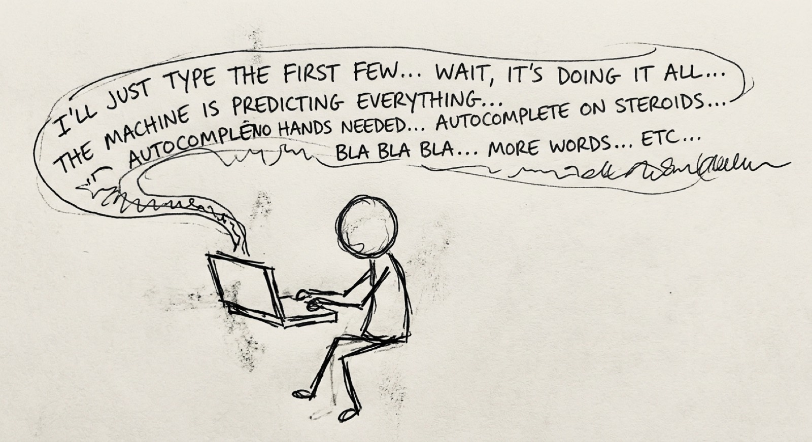
Ask a colleague → “I’m not sure, let me check.” Ask AI → confident, well-structured, completely wrong.
- Hallucination isn’t a glitch. It’s the same machinery working as designed — sometimes the most plausible-sounding continuation simply isn’t true.
- If you take one thing from this morning: AI output needs human verification. Always — especially facts, numbers, names, quotes, and references.
- This isn’t something a future model will “fix.” It’s a property of how the technology works.
Framework 1: the trust tool

- Two questions turn “can we just let the AI do this?” from a gut feel into a decision you can defend.
- This grid is the spine of the day. We use it at the task level this morning and the project level this afternoon.
Two questions, four corners
Q1: do you need an average, or do you need precision?
An average answer is “in the right ballpark” — a first draft, a summary, a starting point. A precise answer has one correct value: a contract figure, a dosage, a citation, an account balance.
Q2: is the decision small or large?
Small = low stakes, easy to reverse, no one harmed. Large = real consequences: money, safety, reputation, someone’s job.
- Walk through the grid:
- Average + Small → lean in. AI’s home turf.
- Average + Large → lean in, but sanity-check before it goes out.
- Precise + Small → use, then verify the specifics.
- Precise + Large → human in the loop. AI may assist, but a person owns the decision.
- Rule of thumb: lean in where “about right” over low stakes is fine; keep a human in the loop where exactly-right meets high-stakes.
The trust tool, on real tasks
- Drafting an internal email. Average is fine, stakes small → lean in.
- Board paper figures. Precision required, stakes large → human owns every number.
- Summarising fifty complaints to find themes. Average is fine → lean in, then have a person skim for the one complaint the AI smoothed away.
- Notice what the grid quietly does: it makes “where does a human stay in the loop?” an answerable question. Most teams answer it by gut — everywhere (lose speed) or nowhere (lose trust).
- Now you have a better answer than yes or no. You have a question — average or precise, small or large? — and the question does the work.
Exercise 1: the AI tool test drive
Same task. Your tool of choice. Judge the result with the trust tool.
Setup (2 min): - Pick a real, small task from your work — an email, a summary, a first draft of something you genuinely need. - Run it through an AI tool.
Do (8 min): - Look at the output. Where on the trust tool grid does this task sit? - Is the output “about right” or does it need exactness? Where would it be confidently wrong?
Debrief (10 min): - Share one place the output was genuinely useful, and one place it was confidently off. - Connect each to a corner of the grid. - Key message: there’s no objectively “best” tool. What matters is never assuming the first output is ready to use.
Morning tea — 10:30
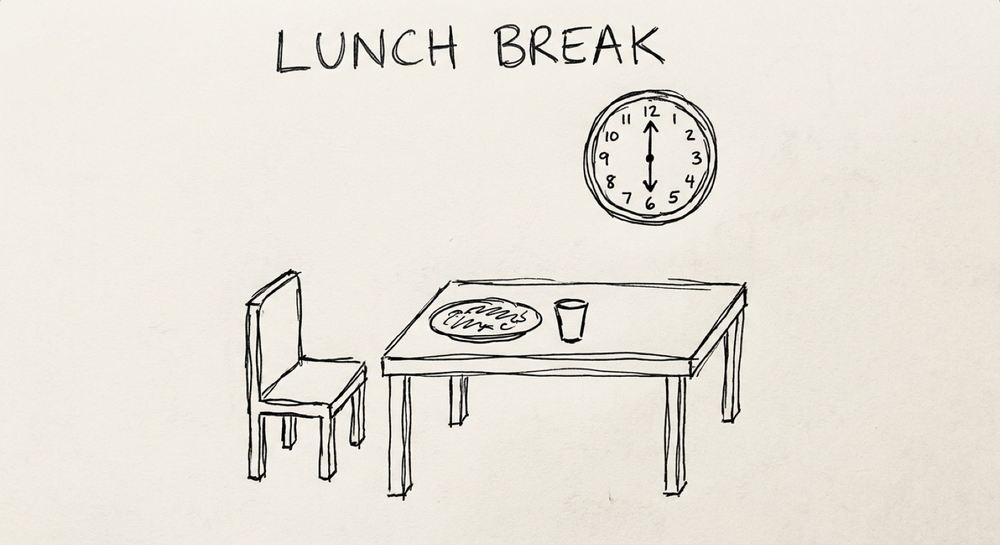
- 30-minute break. Encourage people to bring a real task to mind for the RTCF exercise after tea.
Framework 2: RTCF — talking to AI well
The quality of your input decides the quality of your output.
- R — Role (who should the AI be?)
- T — Task (what exactly should it do?)
- C — Context (what does it need to know?) — where your edge enters
- F — Format (how should the output look?)
Role, Task and Format are scaffolding — weaker or self-hosted models need it spelled out; a frontier model infers it from clear writing. Context is the part that always matters — it’s the one thing only you supply.
- Most people type vague prompts, get vague results, and blame the tool.
- Separate the two halves of RTCF:
- Scaffolding (Role, Task, Format): mostly for weaker / self-hosted models that need the structure. A frontier model (Claude, GPT-4-class) follows plain, well-written instructions well — if you’re good at briefing a human, you’re most of the way there. Use the labels as a checklist, not a rigid template you must fill every time. Over-ritualising them can even make prompts worse.
- Context: the one part that matters on any model, because it’s the thing only you hold — your specifics, your edge. No model, however smart, can manufacture your context.
- So the durable skill isn’t “master a prompt framework.” It’s the skill that already makes you good at instructing people: being clear about what you want, and supplying the context the receiver can’t infer. RTCF just names the parts — and as models get smarter, the scaffolding fades, leaving exactly your judgement and context.
- Honest note for the self-hosted crowd: if you run smaller local models (Ollama etc.), RTCF’s full structure earns its keep — that’s where it pays off most.
Before and after
Without RTCF: > “Write an email about the project delay”
With RTCF: > Role: Senior project manager, professional and empathetic > > Task: Write a client email explaining a 2-week delivery delay > > Context: Delay caused by a vendor integration. The client values transparency. New date: March 15. > > Format: Under 200 words. Acknowledge → explain → new date → recommit.
- The difference is unusable vs. sendable.
- Context is where your edge enters: the specifics only you hold — the relationship, the history, the tone this client needs.
The two-pass demo: where your edge lives
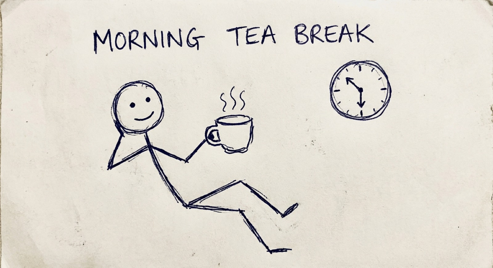
One task, run twice — live.
“This is good. Every one of you got this same good answer. So where’s your edge?”
- Run one real task twice, live (projector, follow-along optional).
- Pass 1 — generic: a naive prompt. The output is slick, correct, and identical to what anyone in this room would get. Point at it: “This is good. Every one of you got this same good answer. So where’s your edge?”
- Pass 2 — with edge: layer in what only you hold — a customer only you’ve talked to, a contrarian bet, a taste call, domain knowledge the model lacks. Watch the output get a soul.
- This is the thesis, felt in the gut rather than heard as a quote. Pass 1 is the baseline (generic, anyone-could-have-it); Pass 2 is the edge (the variation the tool can’t manufacture).
- Make it interactive — let the room shout the “edge” inputs.
- The lesson: the AI is your starting point, not your finish line. Your judgement, taste and relationships are what turn generic into yours.
- Go deeper (companion site): the “two-page voice method” makes this edge persistent — give the AI a writing sample, have it produce a style brief, paste it into custom instructions. Free tool: Style Mirror (stylemirror.eduserver.au), which can run locally. Caveat to land: the result is a “slight parody” of you — an average of your voice — so the residual edge stays yours.
Exercise 2: redesign your workflow
Pick one real task from your own role. Map it. Put AI where it helps.
Do (20 min): 1. Pick a task you do repeatedly — one you own. 2. List its steps. 3. For each step: where does it sit on the trust tool? Where does AI genuinely help, and where must your judgement stay in charge? 4. Redesign: let AI handle the average, low-stakes steps. Protect the precise, high-stakes ones.
Debrief: - You leave with a redesigned workflow you can trial next week — AI at the steps where it adds value, you in charge where it counts. - This is the morning’s takeaway applied: not “use AI more,” but “use AI deliberately, exactly where it belongs.”
Morning recap: where we are
You now have:
- A mental model: AI produces a convincing average.
- The trust tool — average/precise × small/large.
- RTCF — how to direct AI well.
- A redesigned workflow from your own role.
One question to carry into the afternoon: if this is how I trust AI on a single task, how do I trust it across a whole project?
- Bridge to the afternoon: the trust tool doesn’t stop at your desk. It scales.
- This afternoon we lift the same grid to the project level — where the question becomes “where does a human stay in the loop across an entire AI initiative?”
- Same idea, bigger canvas.
Lunch — 12:30
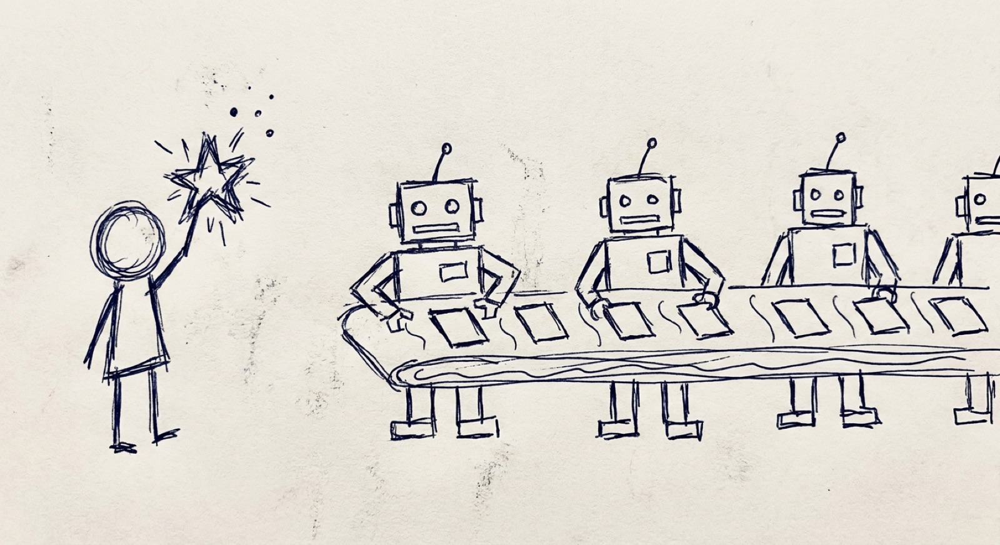
- 45-minute break. Over lunch, invite people to bring a real initiative to mind for the afternoon scoping work.
PART II — AFTERNOON
Why AI delivery is different
- The afternoon is for anyone who will lead, scope, or contribute to an AI project.
- You’re the delivery lead for one funded RetailFlow initiative. You’ll carry it through to a go/no-go decision.
The fair question
I’ve delivered projects before. What’s actually different about an AI project?
Most of your instincts still serve you. Stakeholders, budgets, timelines, the awkward sponsor conversation — all carry over.
But five things behave differently, and each quietly breaks an assumption normal projects let you take for granted.
- The honest reassurance: AI projects don’t fail more often. They fail differently. The cracks appear in different places.
- If you don’t adjust for the five, the project doesn’t fail more — it fails in ways you didn’t see coming.
The five differences
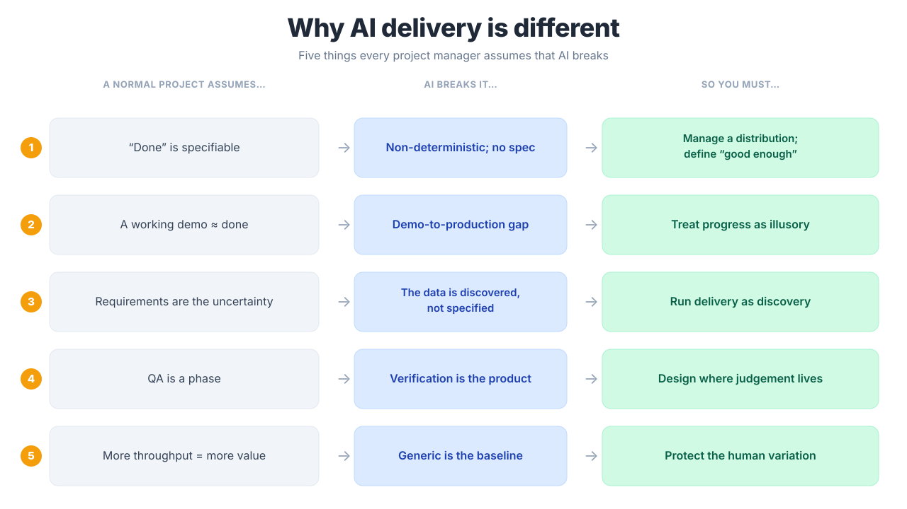
- Walk the table. For each: the assumption, why AI breaks it, the move good leaders make.
- The thread through all five: AI gives you something fluent and roughly-right, fast — then asks you to do the harder work of deciding when roughly-right is good enough, and who checks when it isn’t. That’s a leadership question, not a technical one.
Difference 1: “done” can’t be specified
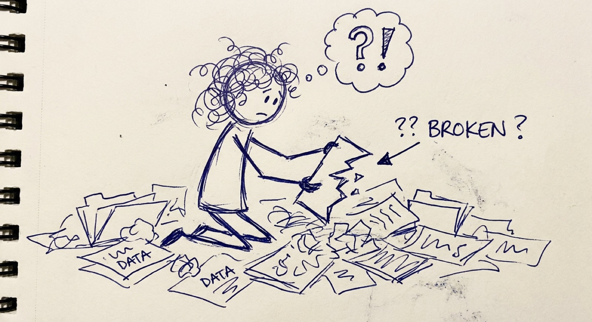
| You normally assume | Why AI breaks it | The move |
|---|---|---|
| Write the requirement, check it was met. | AI is non-deterministic. Ask twice, get two answers. No single correct output — only a spread of likely ones. | Stop chasing a fixed “done.” Manage a probability distribution. Decide up front what “good enough” looks like for this use. |
- This is the trust tool at project scale: you can’t tick a box, you have to set an acceptable band and monitor it.
Difference 2: the demo is a trap
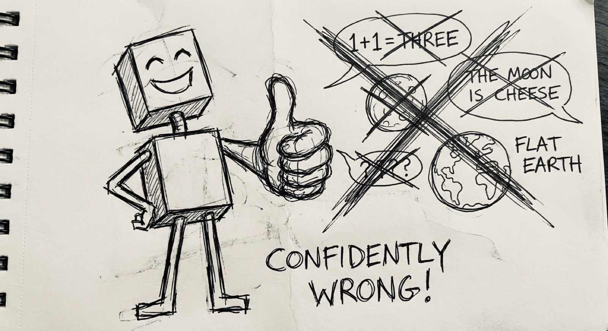
| You normally assume | Why AI breaks it | The move |
|---|---|---|
| A working demo means we’re nearly there. | The demo shows the happy path. The messy real-world cases are where it falls over. Progress feels real but is largely illusory. | Treat the demo as the start of the hard part, not the end. Refuse to let an impressive demo set the timeline. |
- The gap between an impressive demonstration and a dependable production system is wide and deceptive.
- Sponsors see the demo and assume the rest is engineering. It isn’t.
Difference 3: the data is the uncertainty
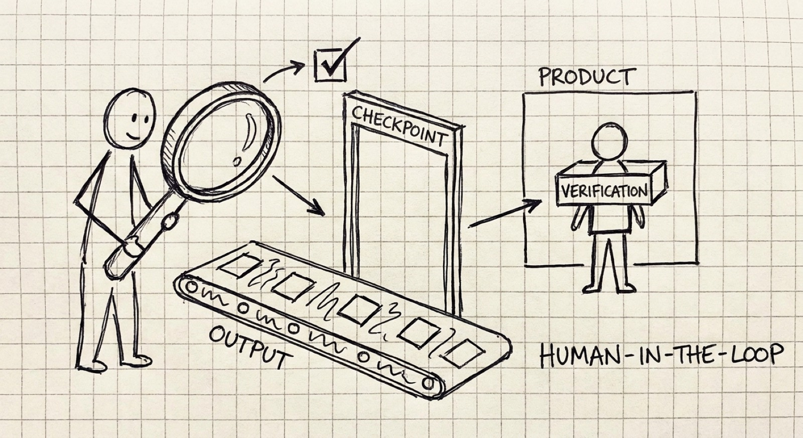
| You normally assume | Why AI breaks it | The move |
|---|---|---|
| The data is a known input. We specify it, someone supplies it. | The data is the uncertainty. You discover what you actually have — its gaps, biases, surprises — only by working with it. | Run delivery as organisational discovery. Build the learning into the plan, don’t treat it as slippage. |
- On an ordinary project, data is something you order. On an AI project, data is something you find — and it’s rarely what you expected.
Difference 4: verification is the product
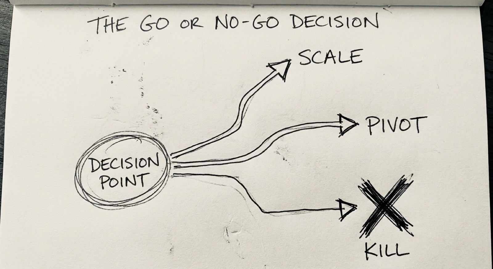
| You normally assume | Why AI breaks it | The move |
|---|---|---|
| The build is the product. Ship the thing, you’re finished. | With AI, outputs vary and can be confidently wrong. The value lives in how you check them, and where a human stays in the loop. | Design the checking deliberately. Make it part of what you ship, not an afterthought. |
- This is the trust tool again: “where does a human stay in the loop?” is a design decision, not something to figure out after something goes wrong.
- The checkpoints are the product. A system without them is a demo.
Difference 5: generic competence is the baseline
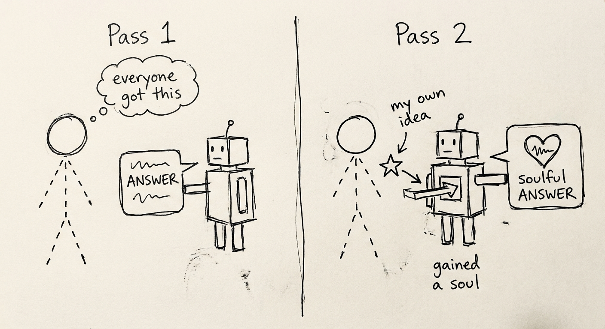
| You normally assume | Why AI breaks it | The move |
|---|---|---|
| If we build something clever, that’s our edge. | When every rival can run the same models, the model isn’t your advantage — anyone can have it. | Compete on the human variation a rival’s identical model can’t reproduce: your taste, your judgement, how your people apply it. |
- This is the morning’s thesis, at organisational scale.
- The edge isn’t the model. It’s the judgement you design into the project — and the data, processes and people that are uniquely yours.
The thread through all five
AI gives you something fluent, plausible, and roughly right, fast — then asks you to do the harder work of deciding when roughly-right is good enough, and who checks when it isn’t.
That’s a leadership question, not a technical one. Which is exactly why it lands on your desk.
- Pause here. The five differences are not cause for alarm or hype. They just describe where the cracks appear.
- Every standard PM tool still applies — it just bends under these five forces. The afternoon is about learning the bend.
Your project: RetailFlow
You are the delivery lead. The board has funded one AI initiative at RetailFlow. Ship it without the predictable failures.
You’ll carry one project through three moves, scoping and stress-testing it by interviewing the RetailFlow team — live AI chatbots who have opinions, disagree with each other, and won’t do your job for you.
- Each group takes a different initiative, so no two designs look alike.
- The bots are fluent and confident even when they don’t know — exactly the AI behaviour you’re learning to lead. Treat what they tell you with the same scrutiny as any AI output.
Sprint 1: scope it against reality
Interview Priya (Data) and Marcus (CIO). Reconcile “move fast” with “the data isn’t ready.”
→ Scoped objectives, data requirements, and a defined “good enough.”
- This is differences 1 and 3 in action: define “good enough” as a band, and treat data as discovery.
- Push back on both. Marcus wants speed; Priya wants realism. A good plan reconciles them — don’t take either as gospel.
Afternoon tea — 2:30
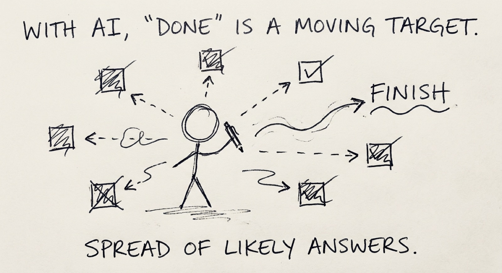
- 30-minute break. The final sprint after tea builds the roadmap and makes the go/no-go call — keep people anchored to their scoped project.
Sprint 2: stakeholders & human-in-the-loop
Interview Emma (MD), Tom (Customer Service), and David (CFO). Decide where a human must stay in charge.
→ A stakeholder plan and a human-in-the-loop checkpoint design.
- This is the trust tool and difference 4 in action: design the checking deliberately. Where does verification sit? Where must a person own the decision?
- The checkpoints are part of the product, not an afterthought.
Sprint 3: roadmap, risk & the go/no-go
Build the delivery roadmap with go/no-go gates and a risk register.
Then make the call: Scale, Pivot, or Kill.
- The honest question at each gate isn’t “is it perfect?” It’s whether the evidence justifies continuing.
- Killing a project that isn’t working, early, is success — not failure. The cost of wrongly scaling is far higher than the cost of wrongly killing.
The Scale / Pivot / Kill call
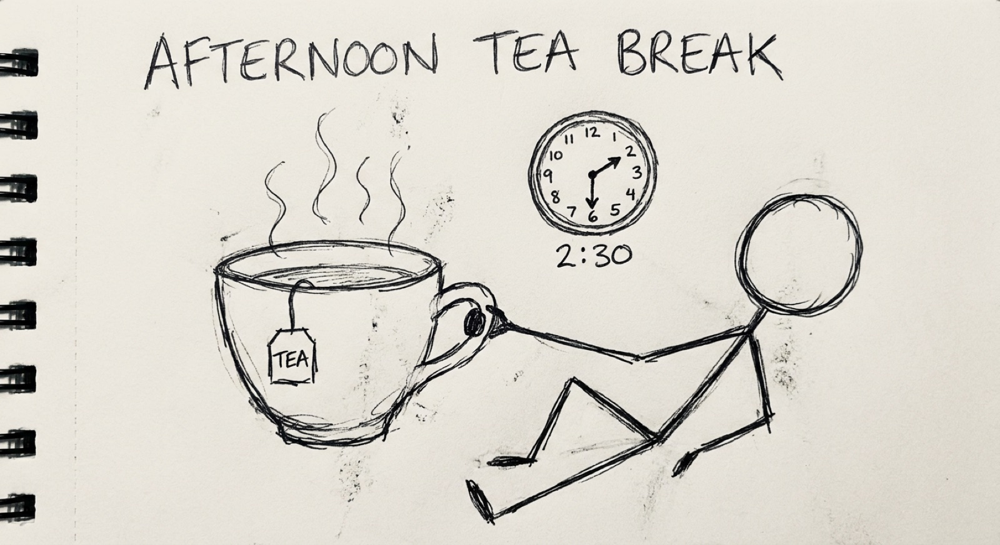
- Scale — the evidence supports it.
- Pivot — right idea, wrong approach.
- Kill — it isn’t working. This is a good outcome.
- Scale: move toward production, with governance and monitoring that grow with the system.
- Pivot: change the shape, keep the intent.
- Kill: stop early, before it consumes more budget and goodwill. Normalise killing — a portfolio that never kills can’t learn.
- The honest question at each gate isn’t “is it perfect?” It’s whether the evidence justifies continuing. The cost of wrongly scaling is far higher than wrongly killing.
- Frame killing to your sponsor as disciplined decision-making under uncertainty, not failure.
What you’ve built by 4:00
A delivery design for a real AI project, not a theory to apply later:
- Scoped objectives, data requirements, and a defined “good enough”
- A delivery roadmap with milestones and go/no-go gates
- A stakeholder plan and a human-in-the-loop checkpoint design
- A risk register and a Scale/Pivot/Kill decision you can defend
- Pause. Look at what the trust tool — learned once this morning — became by the afternoon: a whole project’s human-in-the-loop architecture.
- Same grid. Two scales. One coherent day.
PART III — CLOSE
The edge that’s left to humans
- We close where we opened: the provocation.
Back to the provocation
If the AI is genuinely good at running your work, it’s equally good at running everyone else’s. Generic competence, with no variation, is the baseline — not an advantage.
So where does your edge live?
- You’ve spent the day answering this — at your desk and across a project.
- The answer is the same at both scales: your edge lives in the judgement the tool can’t supply.
Where the edge lives
- At the task: knowing what to ask for, what to keep, what to throw away. (RTCF, the trust tool.)
- At the workflow: deciding where AI handles the average and your thinking stays in charge. (Your redesigned process.)
- At the project: designing the human in, defining “good enough,” making the go/no-go call. (Your delivery design.)
The AI is your starting point, not your finish line. What turns generic into yours is the judgement, taste, and variation only you bring.
- The variation matters precisely because the model produces an average. Averages converge. Variation diverges. Divergence — your taste, your contrarian calls, your specific customers — is where competitive edge survives.
- This is why hollowing out your team’s expertise for short-term speed is a strategic error, not just an ethical one. You’re deleting the only edge you have.
Your action plan
This week. Trial your redesigned workflow. Run one task through the trust tool before you act on it.
This month. Apply RTCF until it’s habit. Start one conversation at work about where a human must stay in the loop.
This quarter. Scope one real AI initiative using what you built this afternoon — objectives, “good enough,” checkpoints, a go/no-go gate. Defend the Scale/Pivot/Kill call.
- Make the commitments specific. Vague plans don’t survive Monday.
- Trade plans with the person next to you — you’ll check in with each other.
What you leave with
- Reusable decision tools — the trust tool, RTCF, the five differences, Scale/Pivot/Kill. Tool-agnostic; they don’t expire when the next model ships.
- A redesigned workflow from your own role, ready to trial.
- A project design — scope, roadmap, checkpoints, risk — for a real scenario.
- A personal action plan for the week, month, and quarter.
- A free companion resource to go deeper: michael-borck.github.io/conversation-not-delegation
- The frameworks are the durable part. The specific tools will change; the judgement won’t.
- Thank everyone. Open the floor for questions.